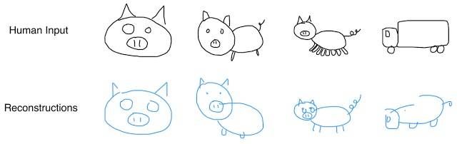

Pesquisadores da Google ensinam rede neural a desenhar
|17/04/2017|
Usando o programa do Google “Quick, Draw!”, os desenvolvedores ensinaram a rede neural a desenhar em formato vetorial através de categorias com mais de 70 mil desenhos.
O sistema aprendeu a desenhar e a unir partes de dados armazenados; David Ha, um dos responsáveis, afirmou: Treinamos nosso modelo em um conjunto de dados de esboços desenhados à mão, cada um representado como uma sequência de ações motoras que controlam uma caneta: qual direção mover, quando levantar a caneta para cima e quando parar de desenhar.
Além disso, o programa é capaz de reconhecer erros. A figura a seguir mostra os desenhos feitos à mão e, logo abaixo, a reconstrução feita pela rede neural; percebe-se que os erros do desenho foram corrigidos pela máquina, já que ela pode identificar que um porco não tem oito pernas e tampouco parece um caminhão.

Comparação entre o desenho manual e a reconstrução virtual
Fonte:
https://olhardigital.uol.com.br/noticia/google-ensina-rede-neural-a-desenhar/67513 (Acesso em 17/04/2017)
Conhecimento sobre programação é diferencial no mercado de trabalho
|17/04/2017|
No mercado atual, quanto mais habilidades, melhor. Além de conhecer outros idiomas e fazer cursos sobre empreendedorismo, saber programar é uma habilidade muito bem-vinda e abre portas para boas oportunidades de trabalho.
Vivemos em um mundo em que a tecnologia toma conta de diversos aspectos da vida; nessa realidade em que estamos, entender como funciona a programação é muito importante para o sucesso profissional.
Nos Estados Unidos da América, por exemplo, há incentivos para que crianças, desde pequenas, tenham contato com a lógica e a programação, porque, de fato, a procura por conhecedores da área só aumenta.
Especialistas da área de Ciência da Computação defendem que a programação deve ser aprendida não para ser programador, mas para desenvolver lógica, resolução de problemas, criatividade, matemática e até mesmo inglês.
Portanto, espera-se que o profissional já chegue no mercado sabendo usar um computador e programar; desenvolver tal habilidade é a chave para o sucesso na profissão.
Fonte:
http://gshow.globo.com/TV-Tem/Revista-de-Sabado/noticia/2017/03/programacao-pra-computadores-e-area-de-estudo-do-momento.html (Acesso em 17/04/2017)
Happy Code
Somos uma escola de tecnologia e inovação voltada para crianças e adolescentes de 5 a 17 anos.
Nossa metodologia de ensino é baseada no conceito global STEAM – Science, Technology, Engineering, Arts and Math, que une o conteúdo de disciplinas fundamentais, formando alunos mais preparados e capacitados para os desafios do dia a dia.
A escola de competências digitais especializada em crianças e adolescentes entre 6 e 17 anos, Happy Code, está oferecendo aulas de programação (iniciadas em 3 de abril) em uma plataforma para que os alunos aprendam a manipular o jogo Minecraft na linguagem JAVA.
O projeto permite que os jovens tenham contato desde cedo com a ciência da computação de maneira divertida e lúdica. Além disso, permite o desenvolvimento de conhecimentos sobre a linguagem, sua sintaxe e sua lógica; tais fatores são considerados diferenciais no mercado de trabalho atual.
Fonte:
https://www.tecmundo.com.br/cursos/115345-curso-online-programacao-java-minecraft-modding-oferecido-gratis.htm (Acesso em 17/04/2017)